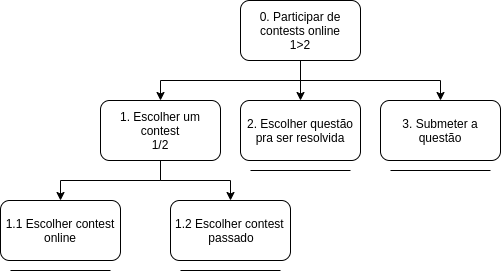
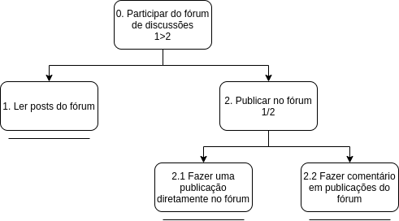

Análise de Tarefas
A análise de tarefas é a atividade que busca ter um etendimento sobre o trabalho dos usuário, como eles realizam este trabalho e o por quê. Nela nós visamos representar todos os métodos de coletar, classificar e interpretar dados que nos ajudem a a entender o desempenho de um sistema.
Em IHC a análise de tarefas é geralmente utilizada em três atividades habituais, são elas:
- Para a análise da situação atual. (Que pode ser apoiada ou não por um sistema computacional.)
- Para o (re)design de um sistema computacional.
- Para a avaliação do resultado de uma intervenção que inclua um novo sistema computacional.
Existem diversos métodos de análise de tarefas, no entanto os mais comuns, e que também serão utilizados neste trabalho são:
- Análise Hieráquica de tarefas (AHT)
- GOMS (Goals, Operators, Methods and Selection Rules)
Análise Hieráquica de tarefas (AHT)
A análise hierárquica de tarefas foi desenvolvida em 1960 com o objetivo de entender as competências envolvidas nas tarefas do usuário, esta avalia primeiro os objetivos de alto nível dos usuários, decompodo-os em subobjetivos.
Objetivos dos Usuários
Os objetivos são as ações que os usuários desejam excutar, estes são o nível mais alto da hierarquia de objetivos, quando um objetivo precisa executar mais de uma tarefa para ser finalizado, chamamos essas tarefas de subobjetivos. Já a relação entre um objetivo e seus subobjetivos são chamadas de planos, por fim, quando nós chegamos no nível mais baixo da hieraquia temos uma operação que é quando atingimos um objetivo ou subobjetivo.
Através da análise de usuários que foi feita pelo grupo, e de uma análise da plataforma, foi possível definir alguns dos objetivos dos usuários do CodeForces e fazer uma análise hierárquica, são eles:
1 - Resolver problemas de programação competitiva

- Figura 1. Diagrama AHT para o objetivo “Resolver problemas de programação competitiva"
| Objetivos/Operações | Problemas e Recomendações |
|---|---|
| 0. Resolver um problema 1>2 | input: Resolver um problema de programação competitiva no codeforcesfeedback: Novo problema aparece na sua lista de problemas resolvidosplano: Resolver um problema em uma determinada linguagem e submete-lo para receber um "accepted"recomendação: observar o status de submição para saber se o seu problema foi aceito |
| 1. Escolher um problema 1/2 | plano: Escolher um problema de programação competitiva no codeforces através da lista de problemas disponíveis ou através da dificuldade |
| 1.1 Escolher através da lista de problemas | |
| 1.2 Escolher através da dificuldade | |
| 3. Submeter um problema | input: Enviar o código de resolução da questãofeedback: O sistema irá avisar se sua resposta foi "accepted", "wrong answer", "time limit exceed", "compilation error" ou "run time error" |
- Tabela 1. Tabela de representação de tarefas da AHT do obejetivo "Resolver problemas"
2 - Participar de contests

- Figura 2. Diagrama AHT para o objetivo “Participar de contests"
| Objetivos/Operações | Problemas e Recomendações |
|---|---|
| 0. Participar de contests 1>2 | plano: Participar de um contest e resolver os problemas |
| 1. Escolher um contest 1/2 | plano: Escolher um contest que pode ser ao vivo ou não |
| 1.1 Escolher contest online | |
| 1.2 Escolher contest passado | |
| 2. Escolher questão que será resolvida | plano: Escolher uma das questões disponíveis no contest e resolve-la |
| 3. Submeter um problema | input: Enviar o código de resolução da questãofeedback: O sistema irá avisar se sua resposta foi "accepted", "wrong answer", "time limit exceed", "compilation error" ou "run time error" |
- Tabela 2. Tabela de representação de tarefas da AHT do obejetivo "Participar de contests"
3 - Participar do fórum de discussões

- Figura 3. Diagrama AHT para o objetivo “Participar do fórum de discussões"
| Objetivos/Operações | Problemas e Recomendações |
|---|---|
| 0. Participar do fórum de discussões 1>2 | plano: Publicar no fórum, ver publicações de outros usuários, fazer comentários |
| 1. Ler posts do fórum | |
| 2. Publicar no fórum | input: Fazer publicações que podem ser dúvidas, avisos e etc.feedback: Ser notificado caso alguém responda um cometário ou comente e uma publicação sua.plano: Escrever um texto e depois publicá-lo. |
| 2.1 Fazer publcação diretamente no fórum | |
| 2.2 Fazer um comentário |
- Tabela 3. Tabela de representação de tarefas da AHT do obejetivo "Participar do fórum"
Análise GOMS (Goals, Operators,Methods and Selection Rules)
O método Goms tem o objetivo de analisar o desempenho de usuários realizando tarefas dentro de um sistema computacional, o modelo GOMS tem se tornado eficiente para prever o desempenho, ou seja, predizer o impacto de decisões de design no desempenho de um sistema computacional.
- Objetivos: Apresentam o que o usuário quer realizar utilizando o software.
- Operadores: Primitivas internas (congnitivas), ou externas (ações que o usuário consegue realizar com o software)
- Métodos: Sequências de subobjetivos e operadores que permitem atigir um objetivo.
- Regras de Seleção: Tomada de decisões do usuário sobre qual método usar para se atingir um objetivo.
5 - Ver minhas submissões

7 - Encontrar um usuário
8 - Buscar por ajuda no site
9 - Ver calendário de contests
10 - Ver Ranking
11 - Utilizar a API do CodeForces
12 - Propor um contest/problema
Outros: Contests no modelo ICPC Grupos da universidade visualizar seu perfil ver pergutas que eu fiz no fórum ver times que participei em contests Talks - enviar mensagem para usuários
Versionamento de edições desta página
| Data | Autor | Descrição | Versão |
|---|---|---|---|
| 08/10/2019 | Erick Giffoni | Criação inicial da página. | 0.1 |
| 10/10/2019 | Lorrany dos Santos Azevedo | Edição da página e adição de método AHT | 0.2 |